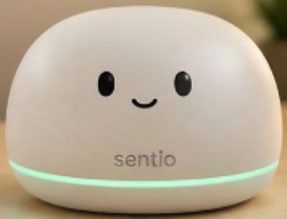

Biểu đồ đơn giản
Lux theo thời gian
Trước đóBây giờ
Demo khoa học kỹ thuật THPT
Đây là mô phỏng trực quan cách cảm biến ánh sáng BH1750 gửi giá trị lux về ESP32 qua I²C.

Kết quả trực tiếp
Ánh sáng ổn định, mô phỏng mức phù hợp để học tập.
Kịch bản trình diễn
Biểu đồ đơn giản
Sơ đồ mạch dự kiến
| Chân BH1750 | Nối tới ESP32 | Ý nghĩa |
|---|---|---|
| VCC | 3V3 | Nguồn 3.3V |
| GND | GND | Mass chung |
| SDA | GPIO21 | Dữ liệu I²C |
| SCL | GPIO22 | Xung I²C |
| ADDR | GND | Địa chỉ 0x23 |
Thông số có nguồn
GPIO21 (SDA) và GPIO22 (SCL) là cấu hình I²C được dùng trong bản demo ESP32. Giá trị lux trên trang là dữ liệu mô phỏng; khi lắp mạch, ESP32 sẽ đọc mẫu thật từ BH1750.
Hỗ trợ người học
Chọn biểu hiện gần nhất để nhận một gợi ý học tập phù hợp. Phần này không dùng camera và không chẩn đoán sức khỏe.
Bằng chứng mô phỏng
ESP32 dự kiến lưu một mẫu lux sau mỗi 2 giây. Bản demo này tạo bản ghi theo đúng kịch bản đèn bật/tắt trên màn hình.
| Thời điểm | Lux | Trạng thái |
|---|